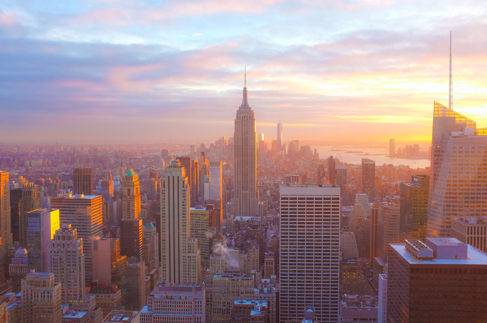

Known officially as the City of New York, New York is the top-populous city in the United States and one of the most populated cities in North America. Home to over 100 museums, galleries, restaurants, and art galleries, New York is one of the world's most important financial, political, and entertainment centers.
On this Page
#Unique Facts About New York City
#New York Times
The Times Square was originally called Longacre Square until 1904, when the paper moved there. Longacre square doesn't quite sound the same, does it?
#Pizza History
NYC has a reputation for pizza. But did you know it's home to the first pizzeria in the country? Lombardi's opened in 1895 and serves some of the best pizza in the city today. "Over the past 50 years, the price of pizza slices and subway rides have remained roughly the same, leading to what economists call "The Pizza Principle." Strangely, when the price of one increases, the other does as well".
#Linguistically Diverse
The city is home to more than 800 languages, making it the most linguistically diverse in the world.
#Honking is Illegal
There is actually a law that prohibits you from honking your horn in New York City; it doesn't seem true but it is. If you've ever been to New York City, you've undoubtedly heard a lot of cars honking. Did you?
#First Capital of the U.S.
As far as the United States is concerned, New York City, not Washington D.C., was the first capital.
#Lots of Babies
We commonly hear the phrase "faster than a New York minute." Do you know, however, that a baby is born in New York City every 4.4 minutes?
#Going Topless
The city of New York doesn't consider going topless illegal.
#Second Largest Library
Over 50 million books are housed in the New York City Library, making it the third largest library in the world and the second largest in the U.S.
#Diversity
In New York City, there are more Jews than in any other city outside of Israel, there are more Chinese than anywhere else in the world, and there are more Puerto Ricans than anywhere else in the world.
#Rental Prices
When it comes to money, you'll need plenty if you want to live in New York. Rent is roughly $3500 a month.
#Home of the Billionaires
There are more than 380,000 millionaires living in New York City, making it home to more billionaires than any other city in the world.
History
5,000 years ago, Native Americans came to the area that is now known as New York. Their descendants include Indian tribes such as the Mohawk, the Cayuga, the Oneida, and the Seneca. Dutch colonists established New Amsterdam on Manhattan Island in 1624. After the British took over the area in 1664, the area became known as New York. However, after the American Revolution in 1776, New York became a U.S. colony, then became a state in 1788. One year later, George Washington was sworn in as the United States’ first president in New York City, then the country’s capital. Washington, D.C., became its new capital the following year, in 1790. On September 11, 2001, hijackers crashed planes into New York's World TradeCenter.
What Makes it so special?
Despite its size, New York City feels more like a cluster of small towns once you live here. Each New York neighborhood has its own character. There is something for everyone in NYC's best neighbourhoods, from Harlem to the Lower East Side, Astoria to Flushing, Brooklyn Heights to Coney Island, and the Bronx's Little Italy to Staten Island's St. George. You can see stunning architectural treasures and more New York City attractions than you can count - from the Statue of Liberty to the Empire State Building.
Why not read…
- Wikipedia's article about New York City.
- britannica' article about New York City.